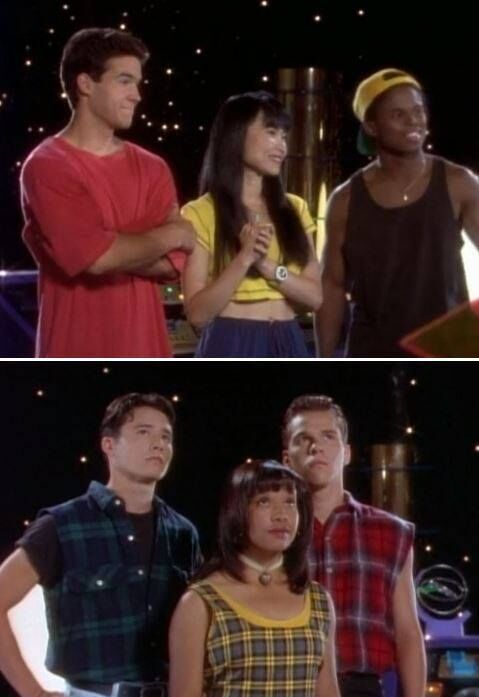

Race & Its Significance
Zack Taylor, the first Black Power Ranger
- Zack Taylor was introduced in the series as the hip, fun, and groovy black cast member. He wasn’t known for practicing karate like his white male friend Jason
- When given his power coin, he was given the Mastodon power coin and took on the role of the first Mighty Morphin Black Ranger
- Although this was huge for inclusion in pop culture media, especially on a TV show. It wouldn’t matter as he was the sole black cast member, given the role of the Black Ranger
- The actor, Walter Emanuel Jones, personally chose to be the comic relief, rather than sticking with the original casting as the smart and witty Blue Ranger
Zack Taylor
Trini Kwan, the first Yellow Power Ranger
- Vietnamese actress Thuy Trang portrays Trini, but her character was Chinese-Japanese.
- She was known as the calm, collected, and second-smartest member of the team. Again, the inclusion of an Asian-American is a great sign of inclusion, but her casting also sparked controversy as she was the first Mighty Morphin Yellow Ranger.
- Never had a skirt on her suit, simply because the Japanese footage had a male actor as the yellow ranger
- Given a "redemption arc" with Zack Taylor in the Power Ranger Comic Books series'
Trini Kwan
Replacing Trini and Zack, Righting Wrongs?
- Once the characters Trini and Zack were written out of the story, they were replaced by Aisha and Adam respectively
- Aisha’s family background goes as far back as her family origin residing in an African village, and Adam’s family being of South Korean descent.
It comes across as a subpar way to right their wrongs.

Screenshot from the episode,